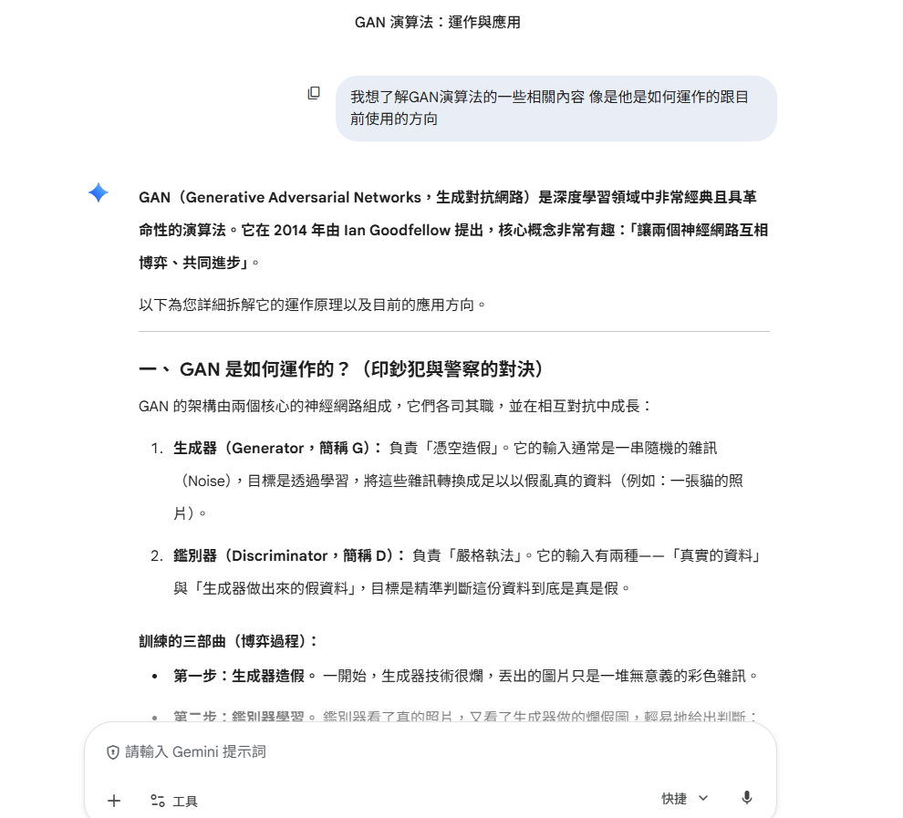
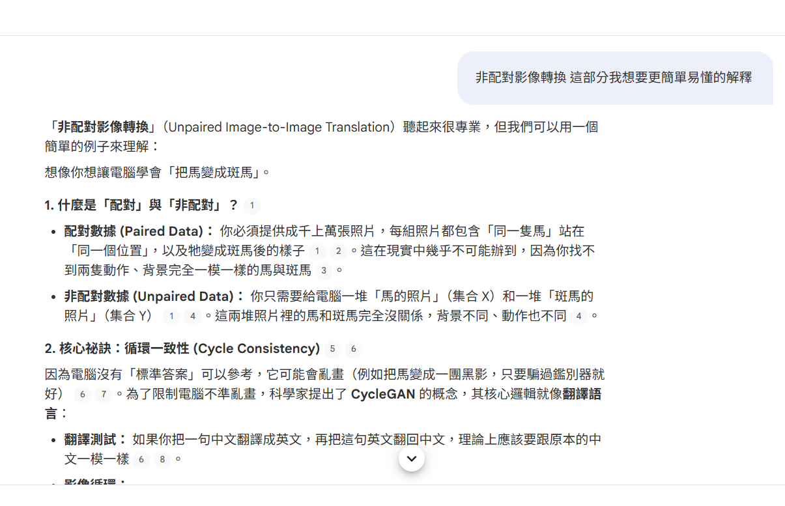
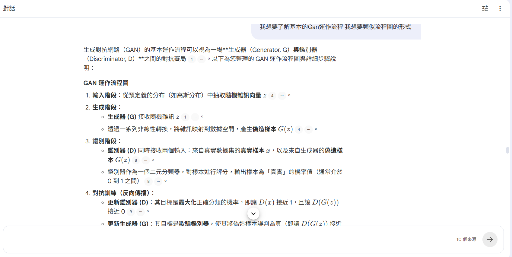
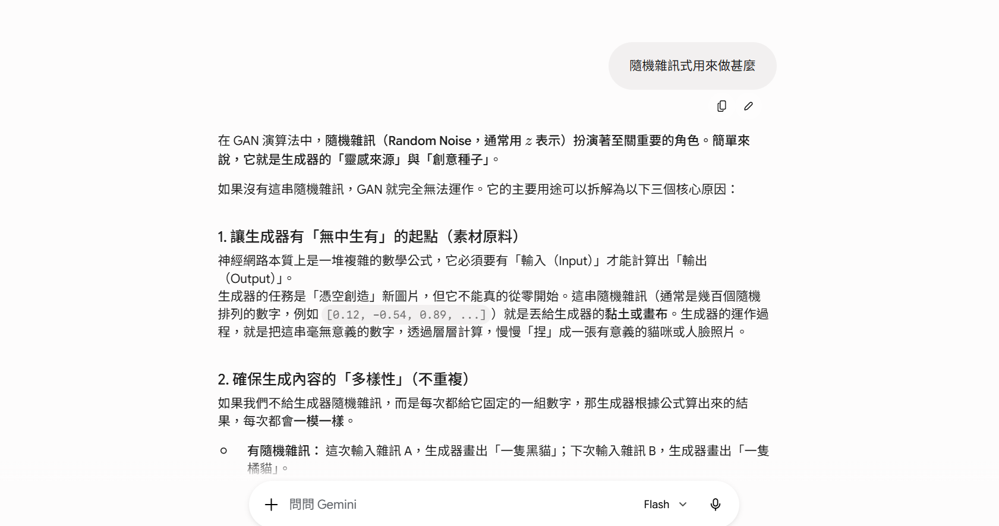
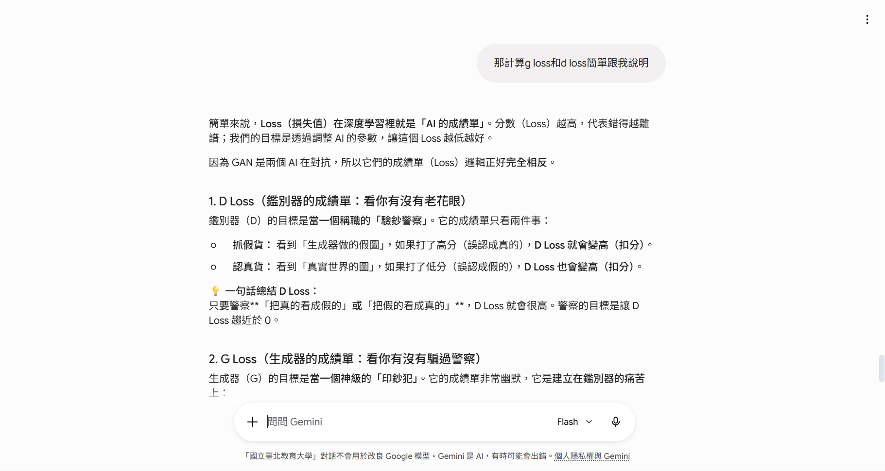
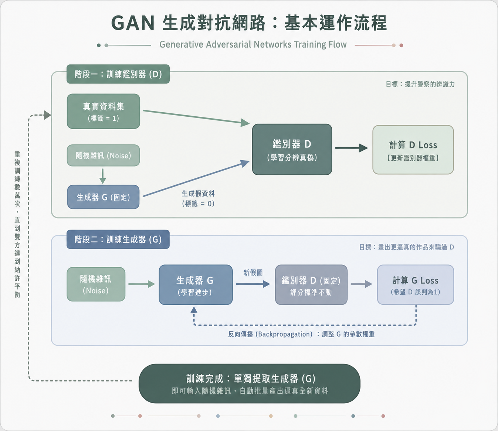

當「產生器」遇上「判別器」：AI 的左右腦互搏術
111316018 楊珮湉
開始探索
是一種生成式AI模型，專用於生成圖片，主要架構比較特別的地方是他是由兩種神經網路所組成。
其中之一為生成器（Generator，這邊簡稱為G），另一方為鑑別方（Discriminator，這邊簡稱為D）。
1. 參考數據不足：在數據不足的情況下，可以生成具高度參考價值的範例。
2. 非配對影像轉換：對於沒有一對一範例的情況下，透過「轉換過去、再轉回來」的自我檢查機制，創造出有類似風格的作品，或是將某圖片中有特徵的東西轉換成另一東西，像是轉換馬為班馬，但其他東西不變。
3. 非監督式學習：能夠在無明確標籤下學習。
第一階段（主要訓練D）：
目標：提升警察的辨識力。
先用真實資料集訓練D，隨機雜訊會生成G，然後G會生產出假圖片，假圖片會扔給D，再由D判別圖片的真假，由結果分析出D Loss（更新鑑別器權重）。
第二階段（主要訓練G）：
目標：畫出更逼真的作品來騙過 D。
隨機雜訊會生成G，G會生產出假圖片，再傳給鑑別器 D （固定）評分標準不動，計算 G Loss，然後反向傳播（調整G的參數權重），再回到G生成圖片的階段，連接到第一階段繼續循環。
結果：訓練完成後會單獨提取G作為最終結果。
**** 隨機雜訊：因神經網路一定需要有輸入才會有輸出，所以這就是輸入為原始材料。
1. 電腦視覺與影像處理：
(1) 擬真影像合成 (Photorealistic Image Synthesis)：從隨機雜訊中生成很真實的人臉、動物或風景照片。
(2) 影像轉換 (Image-to-Image Translation)：這是指將影像從一個領域轉換到另一個領域（如：白天轉黑夜、草圖轉照片），舉例普通照片轉換成莫內或梵谷的藝術風格。
(3) 超解析度 (Super-resolution)：將低解析度的模糊影像重建為具有真實性的高解析度影像。
(4) 影像修復 (Inpainting)：當照片中有缺失或損壞的部分，系統會自動預測並生成符合背景邏輯的內容。
2. 醫療影像（數據稀缺與隱私保護的問題）：
(1) 醫學影像合成：透過合成 MRI 或 CT 影像，GAN 可以擴充訓練數據集，幫助機器學習模型在數據不足的情況下仍能獲得良好的診斷能力。
(2) 電子健康紀錄合成：生成去識別化的合成病例紀錄，方便在不洩露患者隱私的前提下進行醫學研究。
(3) 疾病輔助診斷：利用 GAN 生成的組織紋理特徵來輔助青光眼的自動檢測。
3. 科學研究與模擬（加速計算密集的科學模擬任務）：
(1) 天文學：用於重建星系影像特徵，或在暗物質研究中模擬引力透鏡效應。
(2) 氣候與流體力學：物理知覺 GAN (Physics-Informed GAN) 將物理約束整合進框架，能有效模擬流體流動、氣候動態及結構力學。
4. 媒體、娛樂與倫理挑戰：
(1) Deepfake：高度還原目標人物的臉部表情、語音與動作，產生極其逼真但完全虛構的影片。用於影視特效與過世歷史人物重現外。
(2) 創意藝術：GAN 被藝術家用來創作原創繪畫、音樂甚至詩歌。
5. 工業與自動化系統：
(1) 自動駕駛與機器人：透過合成複雜的交通場景與物件偵測數據，GAN 協助系統在虛擬環境中進行訓練。
(2) 無線通訊：用於生成逼真的射頻（RF）訊號與通道條件，協助 5G/6G 通訊系統的測試。
| 我問的問題 | 其回答的重點 | 回答如何幫助我理解 |
|---|---|---|
| 我想要更了解關於基本運作原理的部分 用簡單易懂的方式陳述給我 |
 |
利用簡單生活化的例子向我說明兩個神經網路扮演的腳色跟要做的事情 |
| 我想知道有關非配對影像轉換更簡單的說法 |
 |
先解釋了甚麼是非配對和配對的名詞定義，和循環一致性的重要觀念，並用實例舉例說明 |
| 我想要了解基本的Gan運作流程 我想要類似流程圖的形式 |
 |
詳細解釋步驟，同時添加了一些更進階的觀念，後面也補充了會遇到的困難處以及核心觀念 |
| 隨機雜訊式用來做甚麼 |
 |
先說明了為甚麼會出現隨機訊的目的，還有補充為甚麼會需要雜訊最後還有以實體的例子說明它的運作和重要性(提供了創造性) |
| 計算g loss和d loss這方面的事，簡單跟我說明 |
 |
先說明了Loss值的意義，並分別描述了兩個不同值的定義和目標，最後給了簡單的公式以表示兩不同值之間的關係 |
核心機制：解決非配對影像的風格/物件轉換
約束機制：循環一致性 (Cycle Consistency)，必須能轉回原圖
資源消耗：較高（需兩套生成器與辨別器）
代表模型：CycleGAN
應用範例：馬與斑馬、季節轉換、藝術風格
核心機制：強調保留「結構」與改變「外觀」的平衡
約束機制：對比學習 (Contrastive Learning)，確保相同位置的特徵相似
資源消耗：較低（僅需單向轉換，節省時間與空間）
代表模型：CUT、Pix2pix (配對型先河)
應用範例：鞋子線稿轉照片

生成不存在的人臉（如 This Person Does Not Exist）、修復老舊照片模糊畫質。
將普通照片轉換成莫內或梵谷的油畫風格，或是將白天風景變成夜景。
影視產業中的換臉技術、合成逼真的語音或虛擬主播。